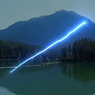

에너지 빔

두 지점 사이에 밝은 중심과 부드러운 후광을 가진 빛줄기를 그리며, 흔들리거나 길이 방향으로 자라게 할 수 있습니다.
설정
| 설정 | 유형 | 범위 | 기본값 |
|---|---|---|---|
| 시작 | 점 (X, Y) | -4000 px~4000 px | -150 px, 100 px |
| 끝 | 점 (X, Y) | -4000 px~4000 px | 150 px, -100 px |
| 빛 번짐 색상 | 색상 | – | #4DA6FF |
| 후광 색상 | 색상 | – | #2B5CFF |
| 너비 | 숫자 | 0.5~100 | 6 |
| 빛 번짐 | 숫자 | 0~4 | 1.2 |
| 후광 | 숫자 | 0~4 | 0.5 |
| 후광 너비 | 숫자 | 1~400 | 40 |
| 진행 | 숫자 | 0~1 | 1 |
| 길이 | 숫자 | 0~1 | 1 |
| 흔들림 | 숫자 | 0~2 | 0.3 |
| 빈도 | 숫자 | 0.1~100 | 6 |
| 변화 | 숫자 | -1000~1000 | 0 |
| 불투명도 | 숫자 | 0~1 | 1 |
| 배경 어둡게 | 숫자 | 0~1 | 0.4 |
| 블렌딩 | 선택지 | 더하기, 스크린, 일반 | 더하기 |